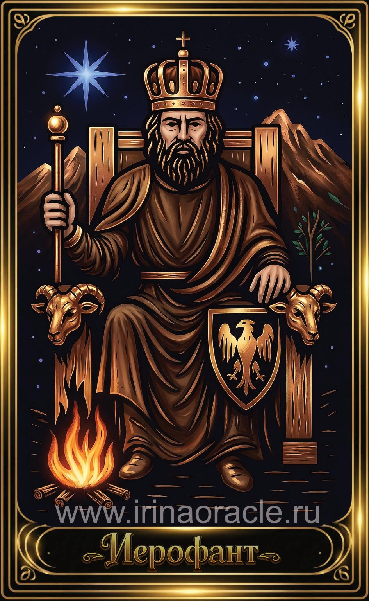

Император — значение карты Таро
Император — значение карты Таро

Император — это архетип силы, порядка и ответственности. Он символизирует структуру, стабильность, зрелость и способность управлять ситуацией. Это энергия лидера, который действует уверенно, опираясь на опыт, логику и дисциплину. Император появляется тогда, когда нужно взять контроль в свои руки и действовать решительно.
Общее значение
Император указывает на необходимость порядка, структуры и чёткого плана. Это карта власти, лидерства и ответственности. Она говорит о том, что ситуация требует зрелого подхода, логики и умения держать границы.
Это время, когда важно проявить волю, организованность и уверенность в себе.
Любовь и отношения
В любви Император говорит о стабильности, надёжности и серьёзных намерениях. Это отношения, в которых важны ответственность, защита и ясные правила. Партнёр может проявлять себя как опора, лидер или человек, который берёт инициативу.
В тени карта может указывать на жёсткость, контроль или эмоциональную закрытость. Важно сохранять баланс между силой и мягкостью.
Работа и финансы
В работе Император — это дисциплина, порядок, ответственность и профессионализм. Карта указывает на карьерный рост, управление проектами, руководство или важные решения. Это благоприятное время для структурирования процессов и укрепления позиций.
В финансах Император говорит о стабильности, надёжности и необходимости стратегического подхода. Он поддерживает долгосрочные планы и разумные инвестиции.
Здоровье
Император указывает на крепкое здоровье, хорошую физическую форму и способность держать тело под контролем. Это карта силы, выносливости и дисциплины.
В тени может говорить о перенапряжении, стрессах или необходимости соблюдать режим и не перегружать себя.
Совет карты
Возьми ответственность. Действуй уверенно. Император советует навести порядок, установить границы, проявить лидерство и не бояться принимать решения.
Это время, когда сила характера и чёткость намерений приведут к успеху.
Теневая сторона
В тени Император проявляется как жёсткость, авторитарность, стремление контролировать всё и всех, страх потерять власть. Иногда — как эмоциональная холодность или нежелание слушать других.
Карта предупреждает: сила без мудрости превращается в давление.